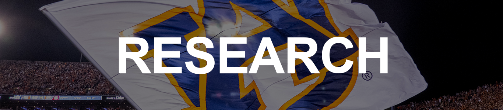

|
CHERYL D. SEALS, PH.D. AUBURN UNIVERSITY COMPUTER SCIENCE AND SOFTWARE ENGINEERING |

My research focuses on Human-Computer Interaction and developing applications to improve the usability of products for many different populations. In many cases, we work to develop strategies for reuse by identifying and developing strategies, which will facilitate novice programmers to create simulations. Work with the novice community is realized with end-user programming/visual programming techniques and reduces the cognitive baggage of having to first learn to program to attain this goal. One community of study interest is K- 12 teachers and their students with End-User Programming techniques. My work with the computer science community facilitates student engagement by creating applications to increase intrinsic motivation. My areas of specialization in Human-Computer Interaction are the following: User Interface Design, Usability Studies, Educational Game Design & Development, and Computer Supported Collaborative Work supporting K-12 and Senior Citizen communities. Some of my human-centric computing research leverages the pervasive nature of computing through social media, networks and we have studied many social medial applications and phenomena like Facebook, Twitter, WebCT, Moodle, Edmodo, etc. and have found that these applications have been very successful and transformative to our ways of thinking about and interacting with others. Our team strives to improve the User Experience in phonetics and linguistic education through research in developing Advanced Learning Tools, and other tools in Augmented and Virtual Reality in multiple content areas (i.e., osteopathic medical, Building Sciences, Civil Structures, Computational Thinking, and Computer Science.